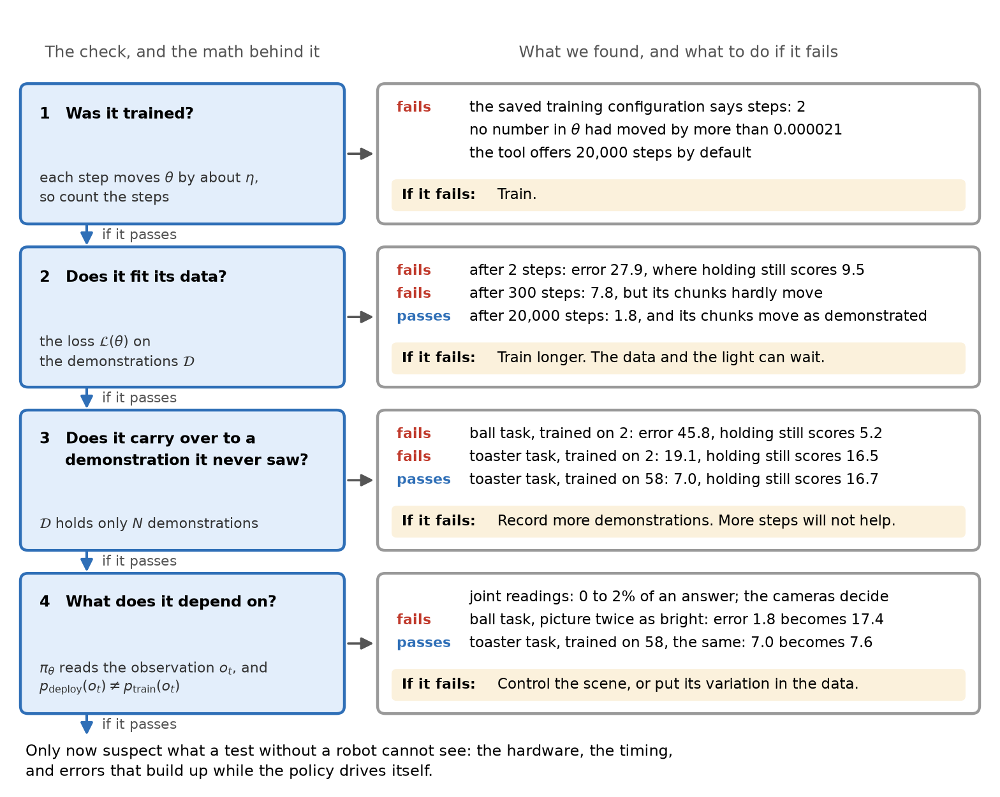

Toward Observability in Physical AI: Offline Diagnostics for Imitation-Learning Policies in Robotics
Abstract
Imitation learning failing on a robot can have multiple causes, and it is hard to figure out the root cause just by looking at the failure. From the Action Chunking Transformer's training objective — an L1 reconstruction term and a KL term on its style variable — we derive ten offline metrics, each read against a reference value and applied in a fixed diagnostic order. On two datasets from a low-cost arm they expose a policy trained for 2 steps instead of 20,000; policies whose output is driven 98 to 100% by the camera inputs and almost none by the joint-state inputs; and a demonstration-only coverage metric, computed before training, that moves with the post-training error.
- Archived copy on Zenododoi:10.5281/zenodo.24496518
- Code and result filesGitHub
- Data and trained policiesHugging Face

How to cite
Shah, S. (2026). Toward Observability in Physical AI: Offline Diagnostics for Imitation-Learning Policies in Robotics. Preprint, Zenodo. https://doi.org/10.5281/zenodo.24496518
@misc{shah2026observability,
author = {Shah, Sameer},
title = {Toward Observability in Physical {AI}: Offline Diagnostics for
Imitation-Learning Policies in Robotics},
year = {2026},
publisher = {Zenodo},
doi = {10.5281/zenodo.24496518},
url = {https://doi.org/10.5281/zenodo.24496518}
}
Use of AI tools
The analysis code, including the code that draws the figures, was written with an AI assistant (Claude), which also helped draft and edit the text; every number comes from the recorded files.
Licence
The paper is under CC BY 4.0, the code under the MIT License. Author's ORCID record.